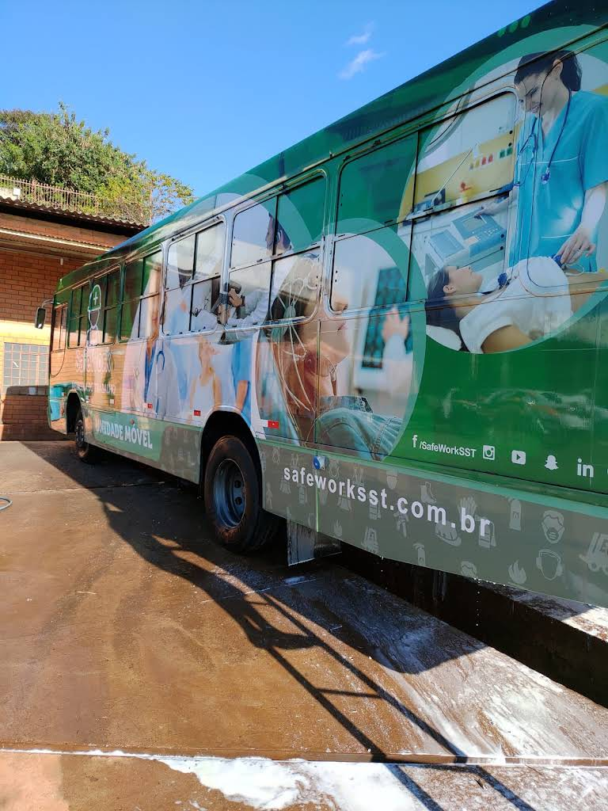
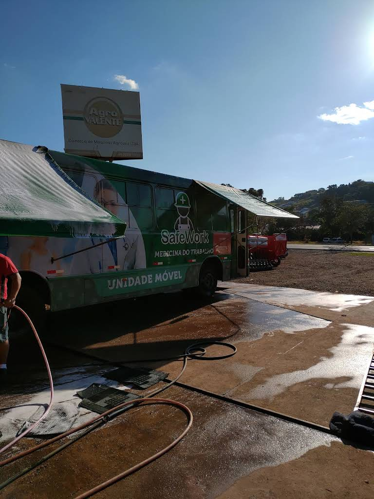
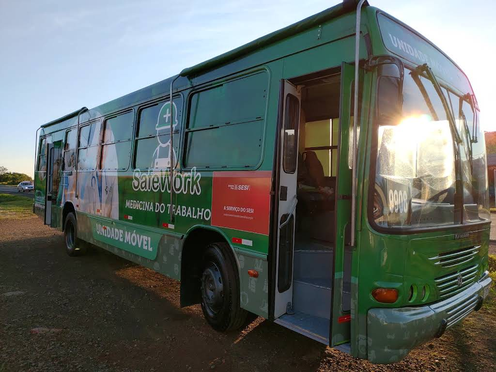

Lavagem automotiva
Serviço de lava-rápido para devolver limpeza e boa apresentação ao veículo.
LAVA-RÁPIDO · PATO BRANCO
Cuidado automotivo no Trevo da Guarany, reconhecido por clientes pelo serviço rápido, caprichado e bem feito.
SOBRE O MASTER
O Master Lava Car atende em Pato Branco e reúne uma avaliação pública de 4,8 estrelas. Os comentários destacam rapidez, atenção da equipe e qualidade no serviço.
Informações apresentadas conforme o cadastro público da empresa no Google Maps.
SERVIÇOS CONFIRMADOS
Serviço de lava-rápido para devolver limpeza e boa apresentação ao veículo.
Rapidez e atenção da equipe aparecem de forma recorrente nas avaliações públicas.
A galeria pública registra atendimento de lavagem em veículo de grande porte.
Para confirmar modalidades, valores e disponibilidade, consulte diretamente o local.



REGISTROS REAIS DO PERFIL PÚBLICO DA EMPRESA
AVALIAÇÕES REAIS
“Trabalho super rápido, caprichado, funcionários muito atenciosos. Super recomendo.”
“Ótimo atendimento e serviço bem feito.”
“Ótimo para levar o carro, pessoal muito atencioso e o dono bota a mão na massa e faz o serviço também. Tá de parabéns.”
ONDE ESTAMOS
Rodovia BR-158, nº 6877, km 532
Trevo da Guarany · Pato Branco — PR
CEP 85501-570
+55 46 9915-0674 · atendimento também pelo WhatsApp.